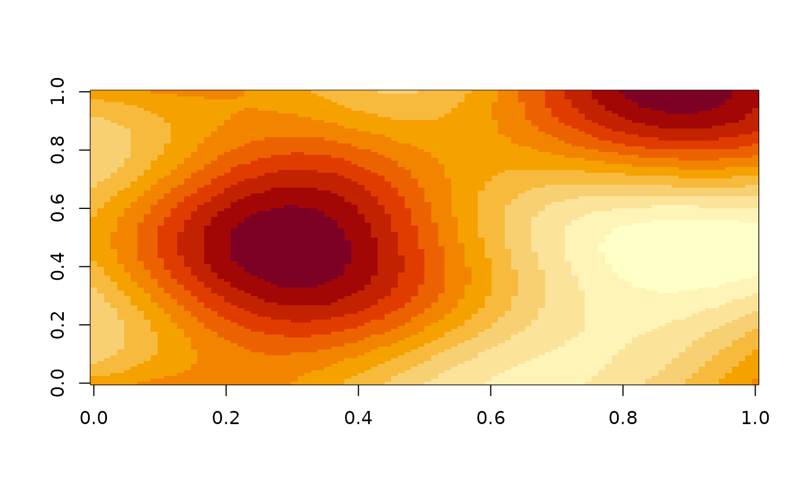

Create a regular n-dimensional grid with an OpenSimplex2 noise gradient.
You can control the noisiness to some degree with the frequency argument.
If you want more control, you should use opensimplex_space(), which
allows you to create a continuous OpenSimplex noise gradient space,
that can be sampled at any arbitrary coordinate.
Arguments
- type
Type of OpenSimplex2 you wish to use. Should be either
"F"for fast or"S"for smooth.- width, height, depth, slice
Positive
integersize of each of the desired dimensions.widthandheightdimensions are required. Other dimensions are optional. However,depthis required whenslicedimension is specified.- frequency
The frequency (
numeric) with which the noise gradient fluctuates with respect to each respective dimension. Low values (<1) will generate smooth gradients, whereas large values (>1) will result in very noisy gradients. Default value is 1.
Value
A matrix (in case of two dimensions) or array (in case of more
dimensions) of numeric values between -1 and +1. OpenSimplex2 uses
gradient tables that ensure that the distribution of values is centred at zero,
meaning the "peaks" and "valleys" are statistically balanced.
Details
The exact state of the noise gradient space depends on R's internal, random generator. So each time you call opensimplex_space, you will get a, space in a different state. If you want to obtain a reproducible state,, you simply set the random seed with set.seed().
Examples
mat <- opensimplex_noise("S", 100, 100)
image(mat)
